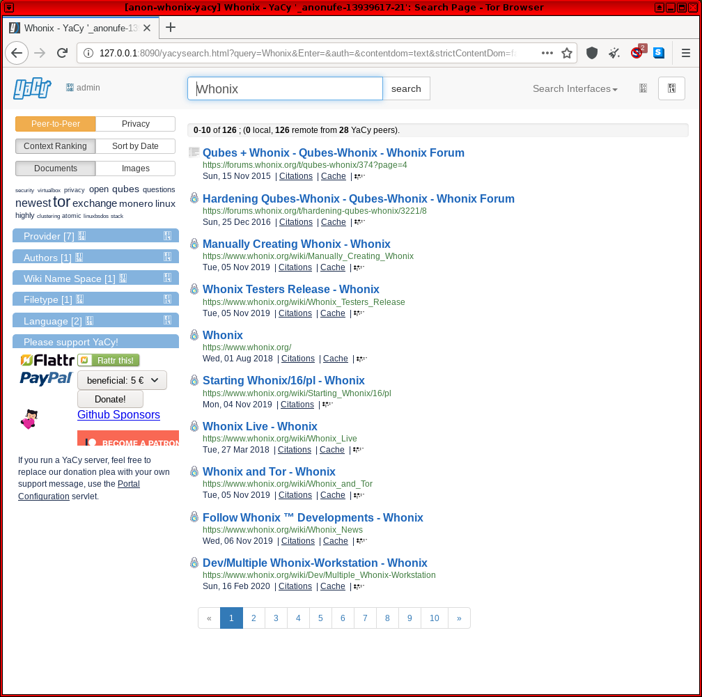

We believe security software like Whonix needs to remain Open Source and independent. Would you help sustain and grow the project? Learn more about our 14 year success story and maybe DONATE!
rssDocumentationOther
Anonymizing
NetworksPrevious page:
rssIndex page:
DocumentationNext page: Other Anonymizing
Networks
YaCy Decentralized Search Engine
Yacy p2p Censorship Resistant Search Engine
 Documentation for this is incomplete. Contributions are happily
considered! See this for
potential alternatives.
Documentation for this is incomplete. Contributions are happily
considered! See this for
potential alternatives.
 This page is archived.
This page is archived.
Outdated. Volunteer contributions to update this wiki page are welcome.
Introduction
YaCy is a p2p, censorship resistant Libre search engine. It can be configured to crawl the Internet and private intranets. [1] The YaCy website states: [2]
YaCy is a free search engine that anyone can use to build a search portal for their intranet or to help search the public internet. When contributing to the world-wide peer network, the scale of YaCy is limited only by the number of users in the world and can index billions of web pages. It is fully decentralized, all users of the search engine network are equal, the network does not store user search requests and it is not possible for anyone to censor the content of the shared index. We want to achieve freedom of information through a free, distributed web search which is powered by the world's users. ... The resulting decentralized web search currently has about 1.4 billion documents in its index (and growing - download and install YaCy to help out!) and more than 600 peer operators contribute each month. About 130,000 search queries are performed with this network each day.
This means it is unnecessary to rely upon centralized professional search engines and their proprietary software. Instead, hundreds of peer operators can serve search queries in a decentralized fashion.
How-to:
Install
Official installation instructions for Debian.
To read more on managing YaCy, consult the official documentation.
Tor Browser Proxy Exception
A proxy exception must be configured in Tor Browser to interact with YaCy. Tor Browser blocks communication with localhost to mitigate some fingerprinting attacks. [3] Note that this exception has fingerprinting implications in the event a website actively abuses JavaScript, but it is still far safer than using another browser. [4] To completely mitigate the risk, it is advised to disable scripts globally with the NoScript extension and only permit JavaScript when absolutely necessary; a sensible anonymity practice.
Note: The following steps will no longer be required once Whonix releases a custom Tor Browser for connecting to alternative networks. [5]
Configure Tor Browser to connect to localhost.
 Warning:
Warning:
- This step changes the web fingerprint of Tor Browser!
- Leave all other settings as is!
In Tor Browser:
- Type
about:configinto the URL bar. - Press
Enter - Search for
network.proxy.no_proxies_on - Set to
0 - Search for
network.proxy.allow_hijacking_localhost - Set to
false
Usage
To access the WebUI, copy 127.0.0.1:8090 into the URL
bar of Tor Browser and press
Enter.
Figure: YaCy in Whonix

Development
SOCKS proxy support is very unlikely in the near-medium term, as the relevant developer ticket has not been updated since 2013, see: Support for "Remote" SOCKS Proxies.
Footnotes
- ↑ https://www.digitalocean.com/community/tutorials/how-to-configure-yacy-as-an-alternative-search-engine-or-site-search-tool
- ↑ https://yacy.net/en/index.html
- ↑ https://phabricator.whonix.org/T291#5252
- ↑ https://gitlab.torproject.org/legacy/trac/-/issues/10419#comment:37
- ↑ Except in the case of YaCy, which needs internet access.
Categories: Documentation